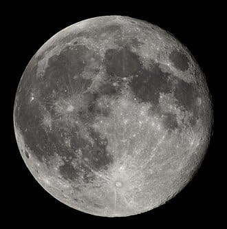
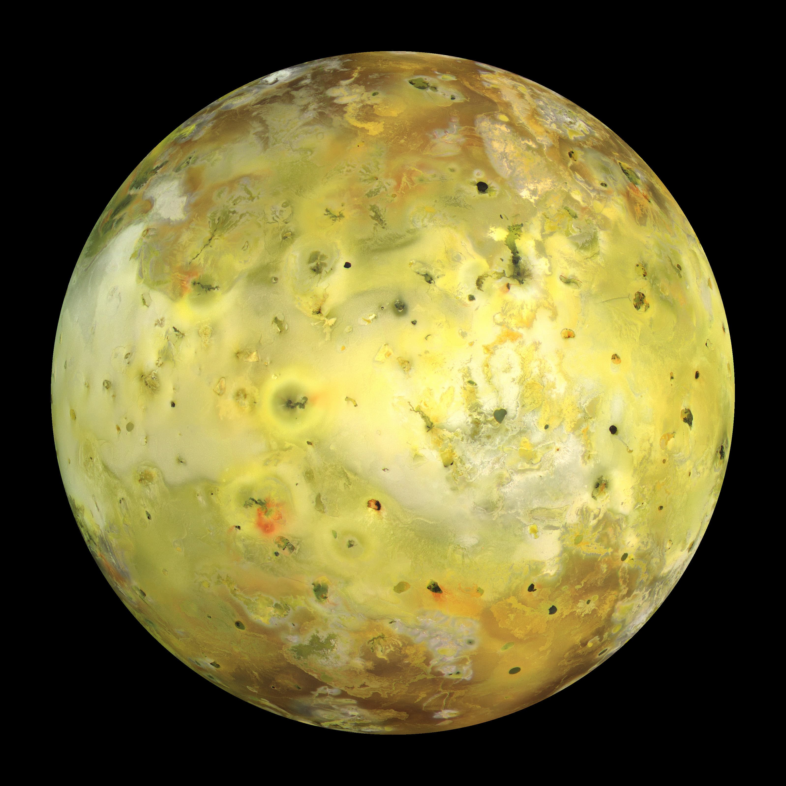
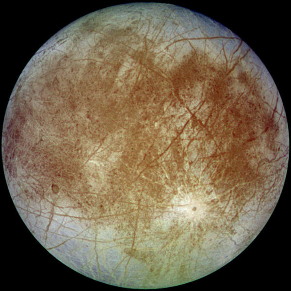
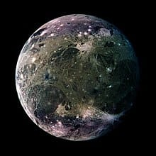
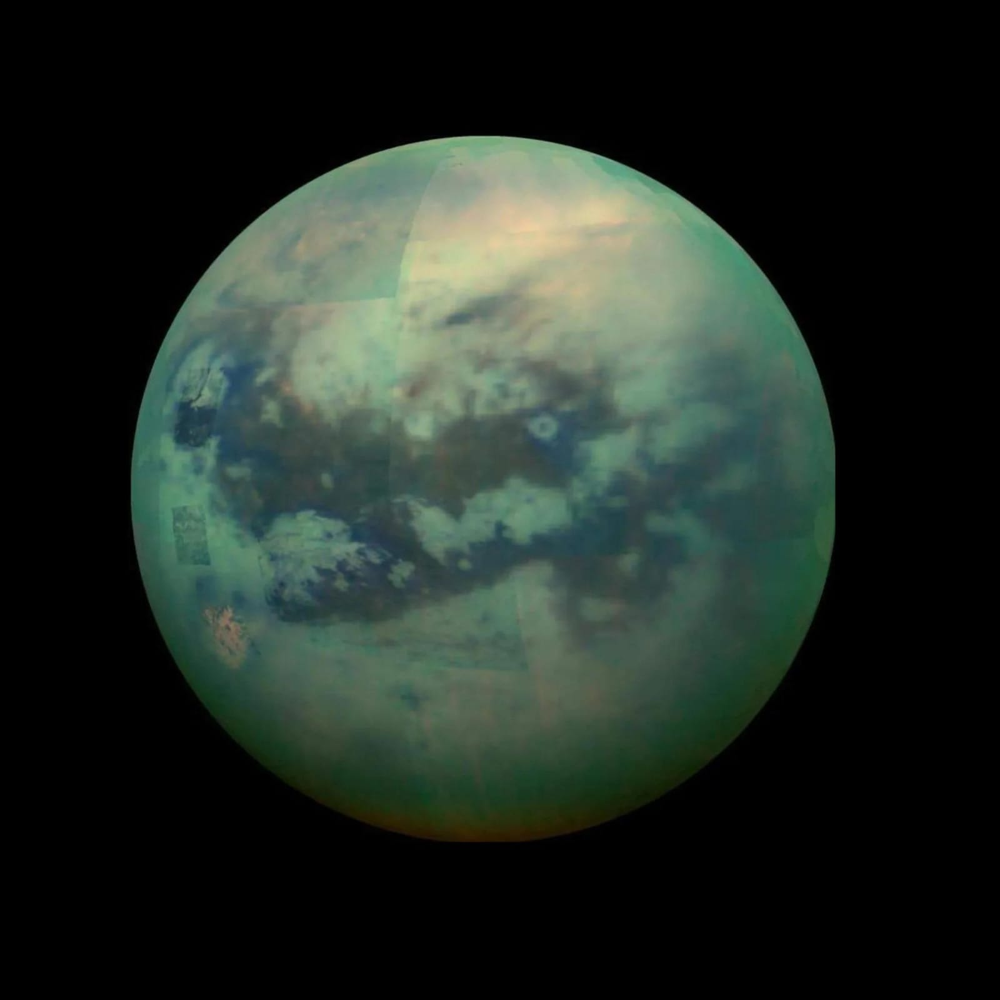
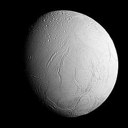

Las lunas, también llamadas satélites naturales, son cuerpos celestes que orbitan alrededor de un planeta. Algunas son enormes como un planeta enano (como Ganímedes),
y otras son pedazos de roca con formas raras. No generan luz propia, pero reflejan la luz del Sol.
Lunas del Sistema Solar
¿Cuántas lunas hay en el Sistema Solar (hasta 2025)?
Aproximadamente:
290 lunas oficialmente reconocidas por la Unión Astronómica Internacional.
Lunas más famosas del Sistema Solar:
La Luna (de la Tierra)
Controla las mareas, es la única que hemos visitado y tiene fases que
afectan todo desde la poesía hasta el sueño de medio mundo.

Io (luna de Júpiter)
Súper volcánica, el cuerpo con más actividad volcánica del Sistema Solar.

Europa (luna de Júpiter)
Tiene una corteza de hielo y un océano subterráneo, ¡posible lugar para vida!
NASA planea una misión para investigarla mejor (la misión Europa Clipper).

Ganímedes (luna de Júpiter)
Es la luna más grande del Sistema Solar (¡más grande que Mercurio!).
Tiene campo magnético propio.

Calisto (Júpiter de nuevo)
Una de las más antiguas y craterizadas, como una esfera con acné cósmico.
Titán (luna de Saturno)
Tiene atmósfera densa y lagos de metano.
¡También podría tener condiciones químicas interesantes para la vida!

Encélado (Saturno)
Expulsa chorros de agua desde el polo sur.
Otro candidato fuerte para tener un océano subterráneo.

Tritón (luna de Neptuno)
Se mueve en dirección contraria a la rotación de
Neptuno (probablemente fue un objeto capturado).